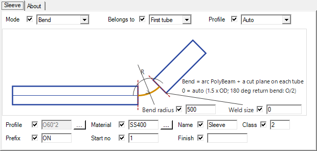
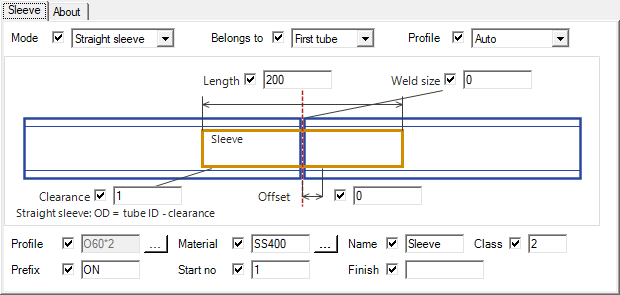
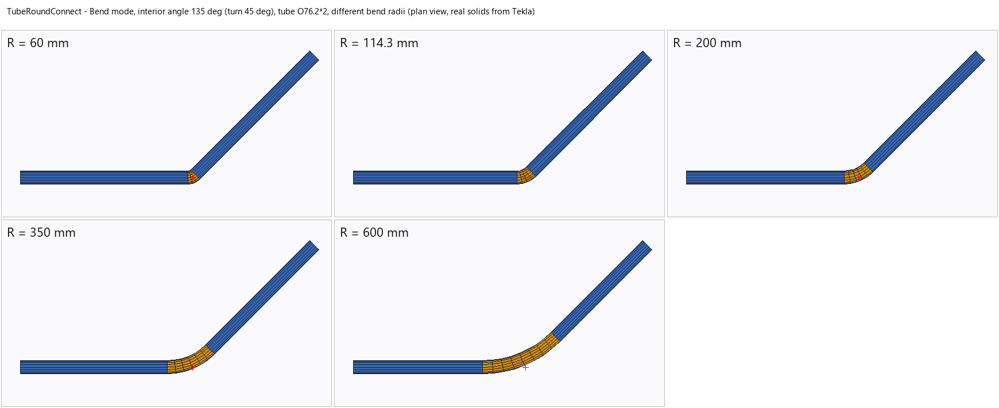
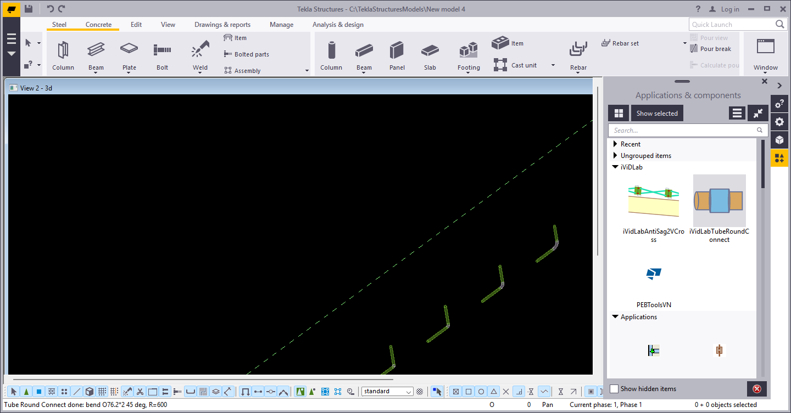

iVidLab Tube Round Connect — Nối ống tròn trong Tekla ở mọi góc, chỉ một thao tác
Nối hai ống tròn trong Tekla, dù nối thẳng hay nối ở bất kỳ góc nào, kể cả quay đầu 180 độ: chọn hai ống, component tự dựng chi tiết nối và tự tính kích thước, không phải đo tay.
Tóm tắt nhanh
- Hai chế độ nối: ống lồng (Straight sleeve) và cút (Bend).
- Cút nối ở mọi góc, kể cả quay đầu 180 độ như cút chữ U.
- Tự tính kích thước ống nối và bán kính cong; vẫn nhập tay được.
- Mối hàn tự động nếu cần.
1. Hai chế độ nối
| Chế độ | Làm gì | Khi nào dùng |
|---|---|---|
| Straight sleeve (ống lồng) | Lồng một đoạn ống nhỏ hơn vào bên trong, bọc quanh mối nối, giữ hai ống thẳng hàng | Nối dài một đường ống thẳng |
| Bend (cút) | Dựng một đoạn cong nối hai ống ở bất kỳ góc nào, kể cả quay đầu 180 độ | Đổi hướng ống, bẻ góc, làm vòng khép kín |


2. Nối ở mọi góc, kể cả quay đầu 180 độ
Trước đây component chỉ nối thẳng được; giờ nối được ở mọi góc mà hình học vẫn được tính tự động: đường cong tiếp xúc cả hai ống, hai đầu ống được cắt gọn, không cần dựng tay.


3. Tự động hoá những việc hay phải làm tay
- Tự tính kích thước ống nối theo ống chính đang chọn, không cần tra bảng hay đo.
- Tự tính bán kính cong ở chế độ Bend: mặc định 1,5 lần đường kính ống; khi quay đầu 180 độ thì tự theo khoảng cách giữa hai ống. Bạn vẫn có thể nhập tay nếu muốn.
- Mối hàn tự động nếu cần.
- Vật liệu, tên, số thứ tự, mã hiệu đã đặt sẵn mặc định hợp lý, sửa được.
4. Cài đặt
- Ở mục Tải về bên dưới, chọn phiên bản Tekla đang dùng để tải gói
.tsep(từ Tekla 2016 trở lên). - Nếu đã cài bản cũ, gỡ trong Tekla Extension Manager trước.
- Nhấp đúp file
.tsep, tick phiên bản Tekla rồi bấm Import. Gói được cài khi Tekla khởi động lần tiếp theo.
iVidLab Tube Round Connect — Joining round tubes in Tekla at any angle, in one step
Join two round tubes in Tekla, straight or at any angle, even a 180-degree return: pick the two tubes and the component builds the connecting part and works out its size, no hand measuring.
At a glance
- Two ways to join: straight sleeve and bend.
- The bend works at any angle, including a 180-degree return like a U bend.
- Sleeve size and bend radius are calculated for you and can still be typed in.
- Automatic weld if you need it.
1. Two ways to join
| Mode | What it does | When to use it |
|---|---|---|
| Straight sleeve | Slides a smaller tube inside and wraps the joint, keeping the two tubes in line | Extending a straight run |
| Bend | Builds a curved piece joining the two tubes at any angle, even a 180-degree return | Changing direction, turning a corner, closing a loop |
2. Any angle, even a 180-degree return
The component used to join tubes in a straight line only. It now joins them at any angle and still works out the geometry for you: the curve meets both tubes, both tube ends are trimmed cleanly, nothing to build by hand.
3. Automating what you usually do by hand
- Sleeve size is calculated from the main tube you pick, no tables or measuring.
- Bend radius is calculated in Bend mode: 1.5 times the tube diameter by default; for a 180-degree return it follows the distance between the two tubes. You can still type your own.
- Automatic weld if you need it.
- Material, name, number and prefix come with sensible defaults you can change.
4. Installing
- In the Download section below, select your Tekla version to get the
.tseppackage (Tekla 2016 or newer). - If an older version is installed, uninstall it in Tekla Extension Manager first.
- Double-click the
.tsepfile, tick your Tekla version and click Import. The package is installed the next time Tekla starts.
Tải vềDownload

Nhóm Zalo người dùng iViDLabiViDLab user group on Zalo
Quét mã QR hoặc bấm nút bên cạnh để vào nhóm: hỏi đáp khi sử dụng, báo lỗi và nhận thông báo bản cập nhật mới.
Scan the QR code or use the button to join the group: usage questions, bug reports and new release announcements.
Liên hệ iViDLabContact iViDLab
Theo dõi fanpage Facebook hoặc gửi email để được hỗ trợ và góp ý.
Follow the Facebook page or send an email for support and feedback.